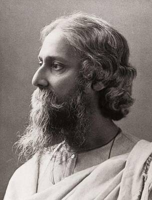

Date of Birth: May 7, 1861
Date of Death: August 7, 1941 (at the age of 80)
Rabindranath Tagore
Rabindranath Tagore was a renowned Indian poet, writer, playwright, composer, philosopher, and social reformer.
He is considered one of the most influential figures in Bengali literature and culture. Tagore introduced new prose and verse forms into Bengali literature, freeing it from traditional models.
His poetry, particularly his collection "Gitanjali," has been widely translated and admired worldwide, earning him the Nobel Prize in Literature in 1913.
Tagore's works often explored themes of love, nature, spirituality, and social justice.